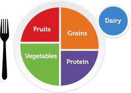

Nutrition
As stated by the CDC, nutrition is an important part of having a healthy lifestyle. Those who have healthier eating habits tend to live longer and have a lower risk for disease, but those with chronic illnesses tend to have better success rates with these healthy eating habits. Having good nutrition isn't just a matter of eating well, but also eating consistently and following a pattern. To be healthy also means it's ok to cut yourself some slack. The healthiest nutritional habits come from those not strict on themselves, but rather eat balanced meals and enjoy what they are eating.
